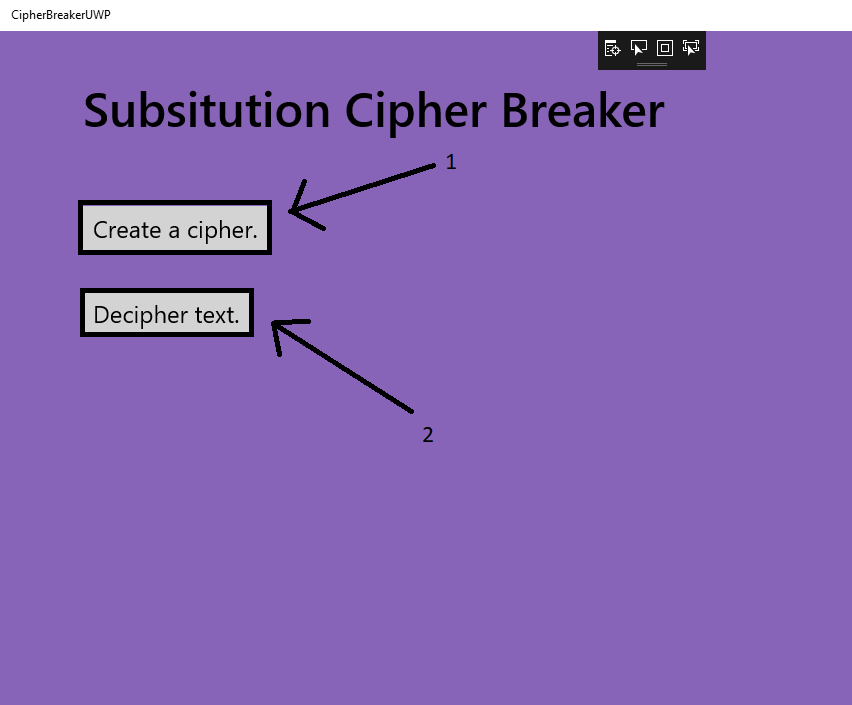
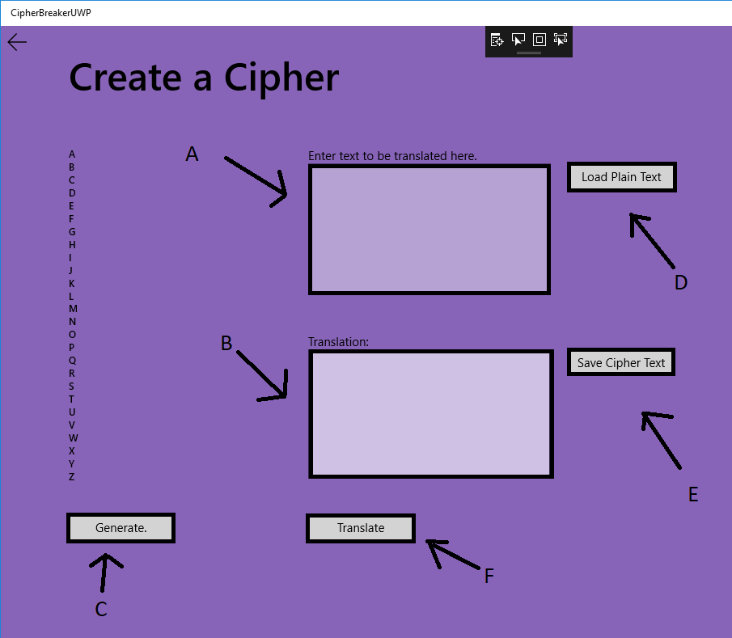
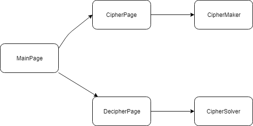
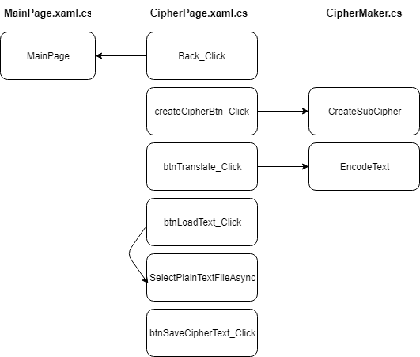
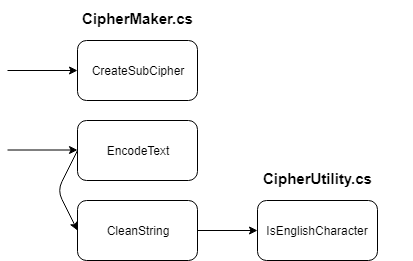

I chose this topic for my Senior Project a number of reasons. Ciphers and decryption have always fascinated me for as long as I remember. In addition, I wanted to learn something new. The technologies and algorithm chosen for this project were the perfect blend of challenge and familiarity to allow a comfortable transition to the project while improving my skills as a software designer and programmer.
My plan for the project from the beginning varied from the final result. I made some changes to make the project flow better and also to steer away from some potentially unnecessary challenges. The original break down is as follows:
When I actually started the project and realized that some things were easier and some things would be much more complicated, I realized I should shift my priorities around in order to accomplish as many useful features as possible for the application. Here is what I changed, and why I changed it.
Change: decided to write all of my code as C# projects.
Reason: Writing the .dll's in C++ was an unnecessary challenge. Despite being comfortable and familiar with the language, some things are just drastically trivial in C# such as exporting as a dll, many data structures and their functionality, as well as some object-oriented features as well.
Secondly, I found writing test scripts in Python to be far less enjoyable in the Windows environment than in a Unix environment. I also realized that many of the features that I was beginning to write in Python would be nice quality-of-life features to have implemented in the actual application itself. Despite Python being much easier to program with, having the features included in the finished project was much more satisfying at the end.
Change: Chose to implement a solution to the cipher in one manner.
Reason: I originally wanted to compare my genetic algorithm to something to prove (or disprove) its effectiveness. Genetic algorithms are great for solving NP problems, but are they the fastest? That is what I wanted to determine.
After realizing that implementing the genetic algorithm was going to be much trickier than anticipated, I made the choice to scale the project back slightly in order to have a fully operational application.
The documentation that I found online on the topic of genetic algorithms in relation to this specific topic seemed to be very incomplete. Many sources I found lacked thorough explanation for key parts of the algorithm, and thus forced me to crowd source the knowledge from numerous sources in order to comprehend all of the complexities. I plan on giving as detailed as an explanation as I can give based on all of the information that I have accumulated.
Change: Included cipher generation as an additional feature to the application.
Reason: This may seem like an obvious feature to have when creating a tool like this, however I did not initially plan on having a feature which allowed the user to randomly create their own ciphers. After writing almost all of the code for this feature initially in Python, it made more sense to just incorporate it into the final project and allow the application to complete both aspects of the encryption.
While I have had the opportunity to worth with C# in the past, it was not in this capacity. My experience was with creating a web applicaton. Being able to use C# for a somewhat complex algorithm as well as UWP really cemented my knowledge and comfort in the language. UWP also uses XAML as their formatting language which was considerably simple to use and to create an aesthetic application. From my experience it was far easier than formatting a design on Android or even HTML.
In addition to UWP, I learned a great deal about genetic algorithms. I had barely ever dabbled in Machine Learning before, so having the opportunity to go all in and write an algorithm such as this ended up being a lot to take on. By the end of it, however, I feel confident in my knowledge enough that I could approach using a genetic algorithm for other applications as well.
In Progress
For this User's Manual, I will give a broad explanation of each feature and how to properly use the aforementioned feature. As features are added, this section will updated accordingly.
1. Generate a single-letter substitution cipher key: When the application loads there are two buttons. Click on the button that reads "Create a Cipher."

A. Generate button: Click here to generate a newly randomized cipher key. Feel free to keep clicking til you get one you like!
B. Manually enter plain text to be ciphered: If you would like to manually type or copy-paste text in to this field, be my guest. Note: Punctuation and capitalization are ignored during enryption.
C. Translate text using the generated cipher key: Click this button to see the text entered above be encryted into cipher text using the cipher key that you generated. If you did not generate a cipher key prior to clicking this button you will receive an error message that tells you to generate a key first.
D. Load plain text from a file: If you would like to enter alot of text into the field by loading the text from a saved file you can click this button in order to choose your saved file. Note that .txt files must be coded to utf-8 and not ANSI. If you attempt to load an ANSI saved file you will receive an error message in the text box (Which you can encrypt if you would like! Fun right?)
E. Translation appears here: The result of your encrypted text appears in this text box.
F. Save the encrypted text to a file: Once you have successfully encrypted your plain text you can now save it to a file to reference later or to save to send your manifesto to the police or something.
G. Type your own file name: Enter the file name that you would like to save your cipher text as.
2. Decipher existing encrypted text: When the application loads there are two buttons. Click on the button that reads "Decipher Text."
Next image will go here.
This page has not been designed yet.
The entirety of the solution has been broken up into 5 main parts. Each file contains one class, so I will explain the primary functionality of each file and each project that is a part of the entire solution.
CipherBreakerUWP
This is the main entry point to the application. Every other part of the entire solution is referenced from here in order to solve a problem and display it on the screen.
MainPage.xaml / MainPage.xaml.cs : this is the homepage for the application. From here we can access the other pages and that's it.
CipherPage.xaml / CipherPage.xaml.cs : this is the page where the creation of a cipher happens. This page contains a number of RichEditBoxes, Buttons, and TextBlocks. Each of the components is hooked up to specific functionality in the .cs page which allows us to call the CipherMaker library.
DecipherPage.xaml / DecipherPage.xaml.cs : this page is where the user can load or enter cipher text and call the genetic algorithm (called from CipherSolver library) in order to decipher the text with as much accuracy as possible.
image goes here.
CipherMaker
This class handles the creation of cipher keys and the translation of plain text to cipher text.
Notable data structures: Dictionary<char, char> - this data structure is used throughout the entirety of the project as a cipher key. It is a mapping of the alphabet A-Z to random unique characters A-Z. Somtimes a letter will map to itself, but most likely it will map to a completely random letter.
CipherSolver
This class has one function and that is to read cipher text and do its best to return plain text by using a genetic algorithm. Here I will explain the algorithm and the design for this feature.
CipherTrainingData